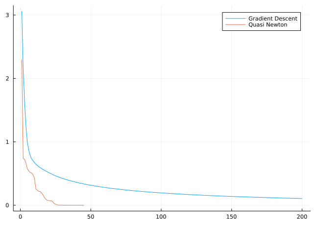

The Rosenbrock Function
Ronny Bergmann 1/3/23
After loading the necessary packages
using Pkg;
Pkg.activate("."); # use the example environment,using Manifolds, Manopt, ManoptExamples
using PlotsWe fix the parameters for the Rosenbock example.
a = 100.0
b = 1.0
p0 = [1/10, 2/10]which is defined on $\mathbb R^2$, so we need
M = ℝ^2Euclidean(2; field = ℝ)and can then generate both the cost and the gradient
f = ManoptExamples.RosenbrockCost(M; a=a, b=b)
grad_f = ManoptExamples.RosenbrockGradient!!(M; a=a, b=b)ManoptExamples.RosenbrockGradient!!{Float64}(100.0, 1.0)For comparison, we look at the initial cost
f(M, p0)4.42And to illustrate, we run two small solvers with their default settings as a comparison.
Gradient Descent
We start with the gradient descent solver.
Since we need the state anyways to access the record, we also get from the return_state=true a short summary of the solver run.
gd_state = gradient_descent(M, f, grad_f, p0; record = [:Iteration, :Cost], return_state=true)# Solver state for `Manopt.jl`s Gradient Descent
After 200 iterations
## Parameters
* retraction method: ExponentialRetraction()
## Stepsize
ArmijoLineseach() with keyword parameters
* initial_stepsize = 1.0
* retraction_method = ExponentialRetraction()
* contraction_factor = 0.95
* sufficient_decrease = 0.1
* linesearch_stopsize = 0.0
## Stopping Criterion
Stop When _one_ of the following are fulfilled:
Max Iteration 200: reached
|Δf| < 1.0e-9: not reached
Overall: reached
This indicates convergence: No
## Record
(Iteration = RecordGroup([RecordIteration(), RecordCost()]),)From the summary we see, that the gradient is not yet small enough, but we hit the 200 iterations (default) iteration limit. Collecting the cost recording and printing the final cost
gd_x = get_record(gd_state, :Iteration, :Iteration)
gd_y = get_record(gd_state, :Iteration, :Cost)
f(M, get_solver_result(gd_state))0.10562873187751265Quasi Newton
We can improve this using the quasi Newton algorithm
qn_state = quasi_Newton(M, f, grad_f, p0;
record = [:Iteration, :Cost], return_state=true
)# Solver state for `Manopt.jl`s Quasi Newton Method
After 45 iterations
## Parameters
* direction update: limited memory InverseBFGS (size 20), projections, and ParallelTransport() as vector transport.
* retraction method: ExponentialRetraction()
* vector trnasport method: ParallelTransport()
## Stepsize
WolfePowellLinesearch(DefaultManifold(), 0.0001, 0.999) with keyword arguments
* retraction_method = ExponentialRetraction()
* vector_transport_method = ParallelTransport()
## Stopping Criterion
Stop When _one_ of the following are fulfilled:
Max Iteration 1000: not reached
|Δf| < 1.0e-6: reached
Overall: reached
This indicates convergence: Yes
## Record
(Iteration = RecordGroup([RecordIteration(), RecordCost()]),)And we see it stops far earlier, after 45 Iterations. We again collect the recorded values
qn_x = get_record(qn_state, :Iteration, :Iteration)
qn_y = get_record(qn_state, :Iteration, :Cost)
f(M, get_solver_result(qn_state))1.4409702527480214e-14and see that the final value is close to the one of the minimizer
f(M, ManoptExamples.minimizer(f))0.0which we also see if we plot the recorded cost.
fig = plot(gd_x, gd_y; linewidth=1, label="Gradient Descent");
plot!(fig, qn_x, qn_y; linewidth=1, label="Quasi Newton")